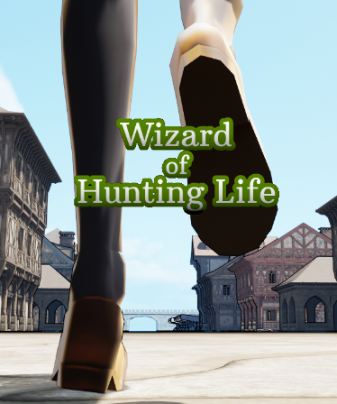

ポートフォリオ
目次
自己紹介
UnrealEngineでゲームやプラグインの開発と販売をしています。
またWebサービスの構築・運用もしています。
Unityも多少使えます。
職務経歴書はこちら
WispScribe(Webサービス)
Python (Flask)を用いて構築し、2025年7月に公開した文字起こしのWebサービスです。
サイト
AIを活用して、音声・動画ファイルのアップロードからWhisperを使用しての文字起こし、Stripeでの課金処理、結果表示まで一連の流れを実装しました。フロントエンドとバックエンドの連携も担当しています。
Loading Screen With Load Percentage(UEプラグイン)
2023年10月にマーケットプレイスで発売したUE5のロード画面のプラグインです。
販売ページ
ドキュメント
このプラグインは基本的に、UMGをスレートウィジェットに変換し、ロードパーセントを取得して表示するためのものです。
アップデートでフェードインとフェードアウトに対応し、ローディングサインマテリアルやバックグラウンドマテリアルを追加しました。
またロードパーセントが変更されるごとにBPのイベントが発火するため、マテリアルを使ったサークルプログレスバーにも対応しています。
Wizard of Hunting Life(UE製ゲーム)

UE4・5で作り、2022年6月にSteamで発売したゲームです。
販売ページ
Blueprintを使い、戦闘システム、装備システム、レベルアップシステム、クエストシステムなどを実装しました。